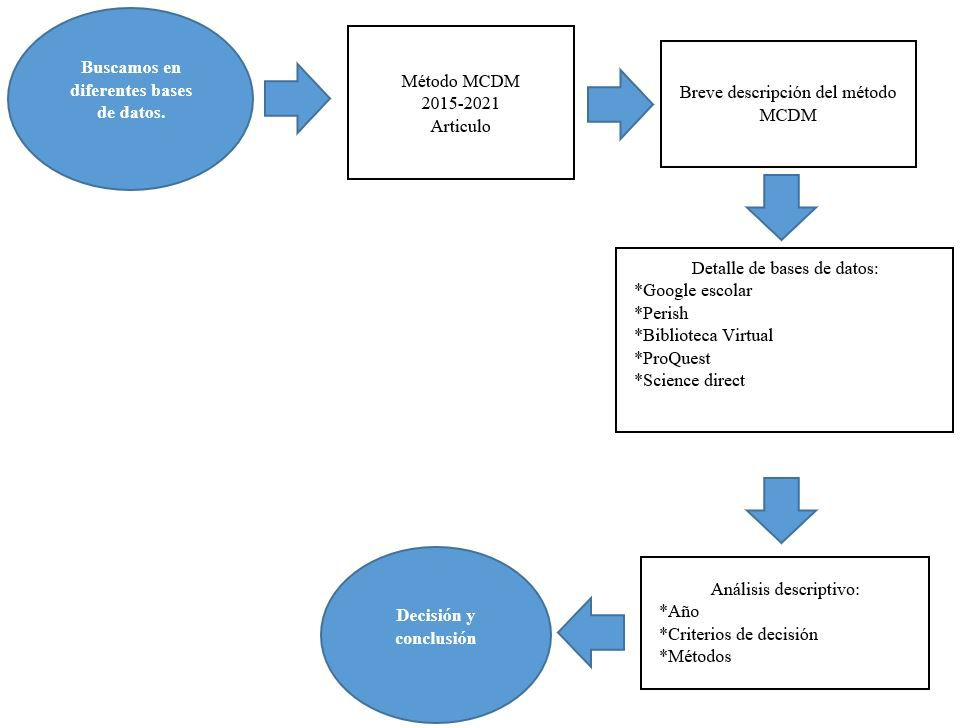
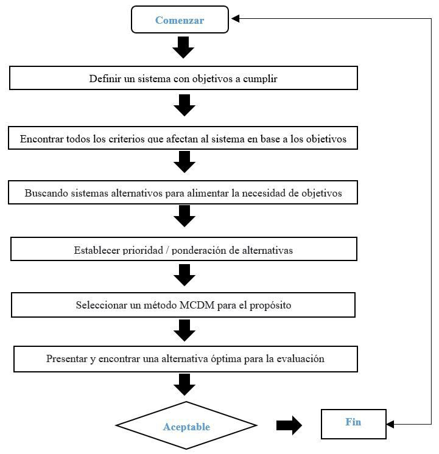
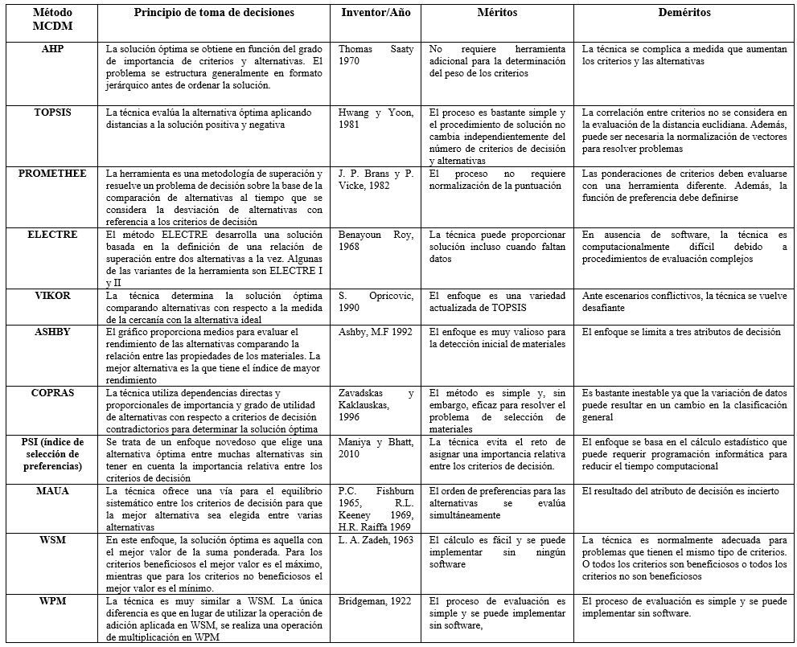
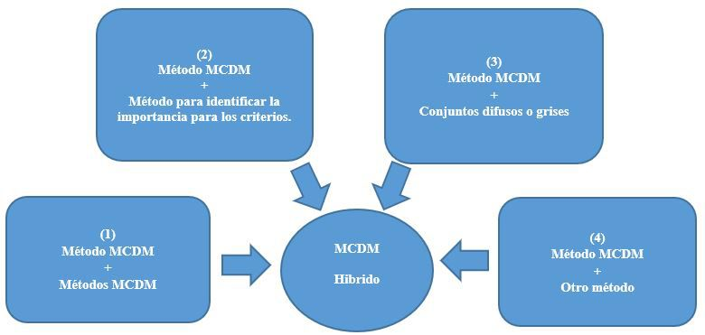
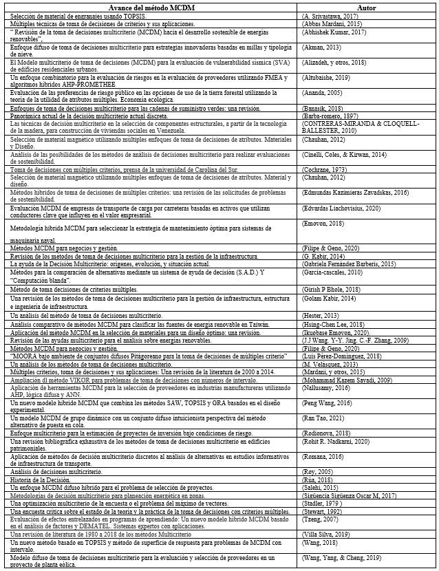
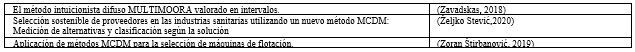
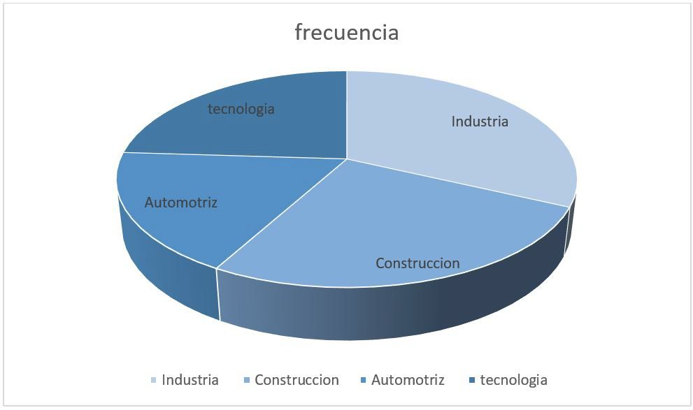

Introducción
Las Técnicas de Decisión Multicriterio (MCDM)
se han ido transformando en herramientas
importantes en la actualidad, especialmente en
la alta gerencia de las organizaciones, asesores
y consultores técnicos para empresas privadas
y gubernamentales [1]. Recientemente, el área
de toma de decisiones de múltiples criterios
(MCDM) había sufrido un rápido desarrollo, la
toma de decisiones multicriterios ha sido una
de las áreas de más rápido crecimiento [2].
MCDM tiene como objetivo proporcionar
métodos de clasificación de alternativas o
seleccionar las alternativas óptimas entre un
conjunto de posibles alternativas con respecto
a varios criterios. Debido a lo común de los
problemas del MCDM en la vida moderna, sus
teorías se han aplicado ampliamente en varios
dominios como asuntos militares, ingeniería
industrial, dominio macroeconómico y
administración. Asimismo, existen numerosas
metodologías multicriterio para brindar ayuda
en la problemática tarea de tomar esta decisión
[3].
La toma de decisiones multicriterio o por
sus siglas en ingles MCDM (Multiple Criteria
Decision Making) se puede definir como: “la
búsqueda de la mejor opción entre todas las
alternativas factibles sobre la base de dos o
más atributos” [4]. sin embargo, esta definición
es tan sencilla que no engloba todas aquellas
actividades necesarias para tomar la mejor
decisión. Es por ello que formalmente, los
problemas MCDM se definen como: “la tarea
para evaluar, comparar y clasificar un conjunto
de alternativas, opciones o elecciones finitas
con respecto a un conjunto de atributos
finitos” [5].
El Análisis de Decisión multicriterio es una
actividad que ayuda a tomar decisiones,
principalmente, en términos de elección,
ordenación y clasificación de alternativas [6]. A la par, no solamente los filósofos son quienes
han razonado y meditado acerca de la decisión
[6]. Las herramientas de toma de decisiones
de varios criterios (MCDM) se aplican
generalmente para llegar a una decisión óptima
cuando se enfrentan a múltiples alternativas
que tienen criterios de decisión multicriterio.
La técnica es una herramienta bien conocida
para resolver problemas complejos de la vida
real debido a su capacidad intrínseca para
juzgar diversas alternativas con referencia
a diversos criterios de decisión con el fin de
elegir la mejor alternativa [7].
El objetivo de los enfoques multicriterio es
ayudar a tomar mejores decisiones, pero ¿qué
entendemos por la mejor opción de decisión?
Este campo se ha desarrollado notablemente
en los últimos treinta años. Ese desarrollo tan
vertiginoso nos hace ser muy cautos respecto
de las limitaciones a la objetividad encontradas
en el campo de la ayuda a la decisión y,
consecuentemente, de la imposibilidad
virtual de ofrecer una fundamentación
verdaderamente científica para llegar a una
decisión óptima [8].
Este método ha tenido un uso increíble
durante las últimas décadas. Su papel en las
diferentes áreas de aplicación ha aumentado
significativamente, especialmente a medida
que se desarrollan nuevos métodos y
mejoran los métodos antiguos. Este papel
analiza varios métodos comunes de toma de
decisiones multicriterio (MCDM) y determina
su aplicabilidad a diferentes situaciones
mediante la evaluación de sus ventajas y
desventajas relativas [9]. Se realizó una revisión
de la literatura para permitir un resumen de
los métodos comunes de toma de decisiones
de múltiples criterios. Una revisión del uso de
estos métodos y a continuación, se examina
la evolución de su uso a lo largo del tiempo.
Además de aplicar métodos MCDM únicos
para decisiones del mundo real, la progresión
de la tecnología en las últimas dos décadas ha permitido tomar decisiones más complejas
métodos de análisis que se desarrollarán [9].
Entre los campos de aplicación de los métodos
multicriterio destacan principalmente 15
según [10]:
- energía,
- ambiente y sustentabilidad,
- administración de la cadena de suministro,
- materiales,
- administración de la calidad,
- GIS
- Construcción y administración de proyectos,
- administración de seguridad y riesgos,
- sistemas de manufactura,
- administración de la tecnología,
- investigación de operaciones e informática,
- administración estratégica,
- administración del conocimiento,
- administración de producción, y
- otros.
Los responsables de la toma de decisiones
a menudo se enfrentan a problemas de
decisión complicados con criterios intangibles
y conflictivos. Se han propuesto numerosos
métodos de toma de decisiones multicriterio
(MCDM) para manejar la medición de las
prioridades de los criterios contradictorios
tangibles e intangibles y, a su vez, utilizarlos
para elegir la mejor alternativa para una
decisión [11].
Hoy en día vivimos en un mundo de decisiones
continuas y necesarias en cada momento de
nuestras vidas. Tenemos que tomar decisiones
en cada momento en escenarios de multitud
de criterios y situaciones conflictivas existentes.
La vida requiere capacidad de decidir de
acuerdo con las múltiples alternativas que
existen en el operandi diario. Recientemente,
varios modelos de criterios aparecen en una
posición floreciente al asignar alternativas a
categorías ordenadas predefinidas teniendo
en cuenta el orden de preferencia definido en
escalas de criterios, convirtiéndose en MCDM un subcampo particularmente importante de
Investigación de Operaciones y Ciencias de la
Gestión [12].

Figura 1. Metodología de la investigación
Autor: Elaboración propia
Revisión de la literatura
Los métodos de toma de decisiones de
múltiples criterios (MCDM) son algunas
de las técnicas que recientemente han ido
ganando extraordinaria popularidad y amplias
aplicaciones [13]. La decisión ha llevado a la
reflexión a muchos pensadores desde tiempos
inmemoriales. Los grandes filósofos tales
como Aristóteles, Platón y Santo Tomás de
Aquino, entre otros, discutieron la capacidad
del ser humano para decidir y, en cierta
manera, promulgaron que tal posibilidad era
lo que permitía distinguir a los hombres de los
animales [14].
La toma de decisiones de múltiples criterios
(MCDM) es una rama de la investigación
operativa que trata de encontrar resultados
óptimos en escenarios complejos, incluidos
varios indicadores, objetivos y criterios
contradictorios [15]. El concepto de toma de
decisiones multicriterio (MCDM) abarcaba
en sus inicios al conjunto de métodos que servían como herramienta para el proceso de
toma de decisiones [16]. Obviamente, la toma
de decisiones es tan antigua como el propio
ser humano, por lo que es tarea imposible
establecer su origen [17]. El viaje de MCDM
es muy antiguo, pero el desarrollo comenzó a
partir de las décadas de 1940 y 1950, [18], en
1944 Von Neumann y Morgenstern introdujo
la teoría de la utilidad, que se convirtió en una
de las principales corrientes procedimentales
de la ciencia moderna de decisiones [19].
Los años de los setentas protagonizo lo que
se considera, desde una visión convencional,
el punto de partida oficial del Análisis de
Decisión Multicriterio [20]. Desde la década de
1960, MCDM ha sido un área de investigación
activa y ha producido muchos artículos y
libros teóricos y aplicados [21]. Recientemente,
la literatura sobre la toma de decisiones
ha crecido rápidamente, y los métodos de
toma de decisiones o análisis de múltiples
criterios (MCDM) parecen ser los enfoques
más utilizados. MCDM es una herramienta
potencial para analizar problemas complejos al juzgar diferentes alternativas como políticas,
escenarios, estrategia, ponderación, etc. en
varios criterios para seleccionar la mejor
alternativa utilizando el cálculo matemático.
Hay varios tipos de métodos MCDM
disponibles en la literatura [22]. Los enfoques
de MCDM son herramientas adecuadas para
el apoyo a la toma de decisiones [23]. MCDM
proporciona un enfoque metódico que utiliza
simultáneamente criterios de decisión tanto
benefician como la información sobre costes y
las opiniones de los responsables de la toma de
decisiones al seleccionar una alternativa óptima
de una lista de alternativas [24]. El objetivo
general de este documento es proporcionar
una revisión sistemática de la literatura. En su
dimensión más básica, un proceso de toma de
decisión puede concebirse como la elección
por parte de un centro decisor (un individuo o
un grupo de individuos) [25].
La Toma de Decisiones Multicriterio, se define
como el proceso que se encarga de diseñar la
mejor alternativa de selección o de seleccionar
la mejor entre un conjunto de alternativas,
la cual utiliza los atributos generales más
atractivos e involucra la selección de la
alternativa óptima por medio de modelos de
preferencia [26]. Los métodos de decisión son
una herramienta que reduce la subjetividad en
la toma de decisiones mediante la creación de
una serie de filtros de selección y ayuda a la
elección entre alternativas complejas [27].
La mayoría de los métodos MCDM tratan
con alternativas discretas, que se describen
mediante un conjunto de criterios. Los valores
de criterios se pueden determinar como una
información cardinal u ordinal. La información
podría determinarse exactamente o podría ser
difusa, determinada a intervalos. Los métodos
MCDM modernos permiten a los responsables
de la toma de decisiones tratar con todos
los tipos de información mencionados
anteriormente.
El término MCDM se utiliza para todos los
métodos y técnicas que implican más de
un criterio contradictorio utilizado por los
responsables de la toma de decisiones para
llegar a las preferencias [28]. Uno de los
problemas encontrados durante el proceso
MCDM es la elección del procedimiento de
agregación para resolver el problema de
la decisión. Sin embargo, los analistas de
decisiones de múltiples criterios proporcionan
una variedad de procedimientos de agregación
[29].
Así mismo, los MCDM son un enfoque de apoyo
en la evaluación y decisión operativa para hacer
frente a problemas complejos que ofrecen una
alta incertidumbre, objetivos contradictorios,
diferentes formas de datos e información,
intereses múltiples y perspectivas, evolución
de sistemas complejos. En comparación con
el enfoque único criterio, la ventaja distintiva
de métodos MCDM es emplear múltiples
criterios o atributos para obtener un resultado
de toma de decisiones integrado [30]. Los
métodos MCDM cubren una amplia gama
de enfoques bastante distintos. Los métodos
MCDM se pueden clasificar ampliamente en
dos categorías: MCDM discreto o discretos
métodos de toma de decisiones multiatributo
(MADM) y toma de decisiones multicriterio
objetivas continuas (MODM) [31].
Recientemente, se han publicado cientos de
publicaciones para proporcionar información
sobre los métodos MCDM, su desarrollo
y aplicación en diferentes campos. Este
artículo intenta documentar el interés
exponencialmente crecido en las técnicas
y enfoques de MCDM y proporcionar una
revisión de vanguardia de la literatura con
respecto a las aplicaciones y metodologías
MCDM.
Este artículo revisa la literatura con el fin de
reconocer los artículos que han sido publicados
en revistas populares y proporcionó la información más importante a los profesionales
e investigadores que investigan cuestiones
relacionadas con los métodos MCDM. Se
llevó a cabo una búsqueda para encontrar
el método MCDM en diferentes revistas,
resúmenes y metodologías. Este artículo
intenta documentar cómo han evolucionado
los métodos MCDM con diferentes tipos de
autores y proporcionan una investigación
de la literatura respecto a las aplicaciones y
metodologías MCDM.
Con el enfoque del campo MCDM se
visualizan los siguientes aspectos:
a) El principal objetivo es describir o
descubrir algo que pueda ser considerado
como una entidad fija y siempre presente;
b) Los esfuerzos de los investigadores
están orientados hacia conceptos, axiomas
y teoremas que son, consecuentemente
fiables para ser utilizados con los propósitos
siguientes:
- Definir condiciones bajo las cuales la existencia
de la entidad que debe ser descubierta está
garantizada (en esta perspectiva se considera
la legitimidad de los procesos);
- Ayudar al decisor a dictar o determinar
la solución correcta: si la racionalidad
correspondiente a los axiomas es aceptada por
el decisor entonces, él debe estar de acuerdo
con la solución obtenida [8].
Los métodos MCDM tienen algunas
limitaciones:
a) la necesidad de tener en cuenta los
coeficientes de peso de los criterios;
b) la composición del conjunto de decisiones
alternativas Pareto-óptimo;
c) la falta de capacidad para cambiar la
dimensión del vector de alternativas y criterios
en tiempo real;
d) impacto significativo de los coeficientes
de peso que el experto determine sobre el
resultado [8].
Aplicación de la forma general de métodos
MCDM
Explicaremos de forma general como se
aplican los métodos MCDM, que no requiere
muchas comparaciones emparejadas y da
lugar a una clasificación racional. Vemos cómo
se debe estructurar un método MCDM. El
método se explica en los pasos que se indican
a continuación: [32].
- Asigne pesos a los criterios en función de su
importancia relativa.
- Normalizar los pesos de los criterios.
- Obtención de pesos normalizados de las
alternativas con respecto a cada criterio.
- Transferir los pesos normalizados de las
alternativas a una matriz en la que los criterios
se establecen en la parte superior de las
columnas y las filas representan las alternativas.
- Multiplicar los pesos de los criterios por los
valores de sus columnas.
- umando cada fila de la tabla y clasificándolas
del peso más alto al más bajo.

Figura 2. Procedimiento general de la técnica MCDM [33].
Algunas de las técnicas populares de MCDM
utilizadas para resolver el problema de la
decisión son: Proceso de jerarquía analítica
(AHP), Modelo de suma ponderada (WSM),
Modelo de producto ponderado (WPM),
Técnica para la preferencia de orden por
similitud con la solución ideal (TOPSIS), VIKOR,
PROMETHEE, ELECTRE y Análisis de utilidades
multitribucional (MAUA) [7]. Los métodos
de toma de decisiones de criterios múltiples
(MCDM) han evolucionado para adaptarse a
varios tipos de aplicaciones. Se han desarrollado
docenas de métodos, incluso con pequeñas
variaciones de los métodos existentes [34].
El método MCDM se ha aplicado a muchos
dominios para elegir las mejores alternativas.
Cuando han existido muchos criterios, el
mejor se puede obtener mediante el análisis
de diferentes alcances de los criterios, pesos
de los criterios y la selección de los óptimos
utilizando cualquier técnica MCDM [35].
Por lo general, los responsables de la toma de
decisiones están obligados a adoptar criterios
definidos para tomar una decisión [36].
Tabla 1. Métodos Multicriterio existentes recurso tomado de [37].

Métodos híbridos MCDM
Muchos autores de la literatura han propuesto la agregación de dos o más métodos MCDM
denominados método híbrido [38]. Durante los últimos años, se han desarrollado nuevos
enfoques para los métodos híbridos de toma de decisiones multicriterio (MHMCDM), pero
aún no se han revisado completamente. Este artículo tiene como objetivo llenar este vacío y
resumir publicaciones relacionadas con la aplicación de MHMCDM [39]. MHMCDM involucra
cuatro grupos de métodos de toma de decisiones o sus combinaciones con otros métodos. La
Figura 1 muestra cómo los métodos MCDM se pueden combinar con métodos para calcular la
importancia relativa de los criterios, así como conjuntos difusos o números grises [39].

Figura 3. Composición del método hibrido MCDM recurso tomado de [39].
Características del método MCDM
Los métodos MCDM mencionados se utilizan
para resolver muchos problemas [40], pero
no todos se sugieren para resolver cualquier
problema de decisión de criterios múltiples.
La toma de decisiones multicriterio (MCDM)
ha surgido como una herramienta de apoyo
a la toma de decisiones para integrar diversa
información técnica y valores de las partes
interesadas [41]. MCDM usa datos cuantitativos
y cualitativos para la evaluación, pero algunos
métodos usan solo cuantitativos y algunos
solo cualitativos. El método ponderadamente
muestra la información cuantitativa y el
resultado se produce en forma de clasificación
la evaluación mediante gráficos para la
evaluación da la información cualitativa y
cuantitativa y da el resultado en forma visual.
Los métodos de clasificación muestran la
información cuantitativa y da resultado en
forma de clasificación en algún momento da
una clasificación incompleta [22]. Los métodos
de decisión multicriterio son poderosas
herramientas que ayudan a generar consenso
en contextos complejos de decisión [42]. Las
técnicas y enfoques de MCDM mejoran la
calidad de las decisiones mediante la creación
del desarrollo más eficiente, racional y explícito
[43].
No hay que olvidar que los MCDM son técnicas,
no herramientas, de decisión en sí mismas. Su
función es ayudar en el proceso, ya sea como
base del proceso o en alguna de las diferentes
fases, jerarquizar los criterios, estructurar el
problema, definir el objetivo y organizar o
sintetizar el gran conjunto de variables. Por
ello, para su correcto uso es necesario conocer
los errores típicos, así como su robustez
y eficacia [44]. La toma de decisiones de
múltiples criterios (MCDM) es una rama de la
investigación operativa que trata de encontrar
resultados óptimos en escenarios complejos.
[45]. Los problemas de MCDM generalmente
comprenden cinco componentes que son:
objetivo, preferencias del responsable de la
toma de decisiones, alternativas, criterios y
resultados respectivamente [46].
Métodos MCDM y análisis de frecuencias
de áreas de aplicación (industria)
Según Nallusamy la toma de decisiones es
un esfuerzo social y económico importante
para cualquier organización [47]. Las áreas
de aplicación identificadas son; automotriz,
agricultura, energía y energía, química,
marítima, salud, construcción y fabricación.
Las ocho áreas de aplicación se describen
brevemente de la siguiente manera: [7]
- Industria automotriz
- Industria agrícola
- Industria energética y energética
- Industria química
- Industria marítima
- Industria de la salud
- Industria de la construcción
- Industria manufacture
Muchos estudios han aplicado el modelo
MCDM a diversos campos de la ciencia y
la ingeniería [48]. La toma de decisiones
multicriterio (MCDM) es una rama esencial
en la ciencia de la gestión, que se ha aplicado
ampliamente en muchos campos [49]. Los
métodos de toma de decisiones multicriterio
(MCDM) son herramientas muy útiles para
la toma de decisiones diarias en diferentes
campos [50].
Tabla 2. Avance del método MCDM


Graph1textGraph
Fuente: Elaboración propia basada en la investigación por año y autor de los métodos MCDM
Conclusiones
En este documento se presentó una revisión literaria de los Métodos MCDM, la investigación se
llevó a cabo en un total de 50 artículos, publicados en novedosas revistas y bases de datos tales
como Perish, Science Direct, Google escolar, Pro Quest, publicados en un periodo del 2015-
2021. De este modo, se encontró como resultado que los métodos multicriterio son utilizados
en todos lados de nuestras vidas ya sea en industria, construcción hasta en lo más básico en
el hogar. Igualmente, en esta investigación se llevó a cabo de la revisión literaria detallada de
autor, año en que se publicó, cual es la funcionalidad del método y la efectividad que tiene al
ser aplicados en el área laboral. Los resultados sugieren que hay un crecimiento significativo en
las aplicaciones MCDM que año tras año son de gran ayuda esta técnica. También nos arrojó
como resultado que tanto se aplica el método en las siguientes áreas identificadas. Figura 4.

Figura 4. Publicaciones por áreas de aplicación
Autor: elaboración propia basada en el total de artículos investigados.
Referencias
- Contreras Miranda, Wilver; CLOQUELLBALLESTER, Vicente y Owen de Contreras,
Mary. Las técnicas de decisión multicriterio en la
selección de componentes estructurales, a partir
de la tecnología de la madera, para construcción
de viviendas sociales en Venezuela. Madera
bosques [online]. 2010, vol.16, n.3 [citado 2021-
03-07], pp.7-22. Disponible en: http://www.scielo.org.mx/scielo, ISSN
2448-7597
- Nallusamy, S., D. Sri Lakshmana Kumar, K.
Balakannan y P.S. Chakraborty. “Aplicación
de herramientas MCDM para la selección de
proveedores en industrias manufactureras
utilizando AHP, Fuzzy Logic y ANN.”
International Journal of Engineering Research
in Africa 19 (octubre de 2015): 130–37. https://doi.org/10.4028/www.scientific.net/jera.19.130
- Luis Pérez-Domínguez, Luis Alberto RodríguezPicón, Alejandro Alvarado-Iniesta, David
Luviano Cruz, Zeshui Xu, “ MOORA bajo el conjunto difuso de Pitágoras para la Toma de
Decisiones de Múltiples Criterios “, Complejidad,
vol. 2018, artículo ID 2602367, 10 paginas,
2018, https://doi.org/10.1155/2018/2602376
- Wang, P., Li, Y., Wang, Y.-H., and Zhu, Z.-Q, “Un
nuevo método basado en TOPSIS y método
de superficie de respuesta para problemas
mcdm con números de intervalo. Problemas
matemáticos en ingeniería 2018”, 2015
- Zavadskas, E. K., Antucheviciene, J., Hajiagha,
R., Hossein, S., and Hashemi, S. S.”El método
intuicionista difuso MULTIMOORA valorado
en intervalos para la toma de decisiones
grupales en ingeniería. Problemas matemáticos
en ingeniería 2018”, 2015.
- Stadler, W. “Un estudio de optimización
multicriterio o el problema de vector máximo,
Parte I: 1776-1960”. Revista de teoría y
aplicación de la optimización”, 29 (1); pp: 1-52,
1979.
- Ikuobase, Emovon. “Aplicación del método
MCDM en la selección de materiales para un
diseño óptimo: una revisión”, 2020.
- Barba-Romero, S, “Panorámica actual de la Decisión
Multicriterio Discreta”. Investigaciones
Económicas, Vol. XI, Nº2, pp. 279-308, 1987.
- M.Velazquez, Un análisis de los métodos de toma
de decisiones multicriterio, Int. J. Oper. Res., 10
(2) (2013), págs. 56-66, 2013.
- Villa Silva, A. J., Perez Domínguez, L., Martínez
Gomez, E., Pérez Olguin, I. J. C., & Almeraz
Durán, S. N. (2019). Una revisión de literatura
de 1980 a 2018 de los métodos Multicriterio,
Mundo FESC, 9(18), pp: 89-102,2019. https://www.fesc.edu.co/Revistas/OJS/index.php/mundofesc/article/view/452
- Salehi, K. “Un enfoque mcdm difuso híbrido para el problema de selección de proyectos. Cartas
de Ciencias de la Decisión”, 4(1), 109-116, 2015.
- José Filipe (Filipe, J.); Tolga Geno (Geno, T.,),
Métodos MCDM para Negocios y Gestión,
2020.
- Mardani, A.; Jusoh, A.; Tampoco, K.M.D.;
Khalifah, Z.; Zakwan, N.; Valipour, A. Múltiples
criterios técnicas de toma de decisiones y sus
aplicaciones- Una revisión de la literatura de
2000 a 2014. Res.-Ekon. Istraz. 2015, 28, 516-
571
- Gabriela Fernández Barberis, Mª del Carmen
Escribano Ródenas, La Ayuda a la Decisión
Multicriterio: orígenes, evolución y situación
actual, pp.1-19, 2015.
- A. Kumar, B. Sah, A. Singh, Y. Deng, X. He, P.
Kumar, R. Bansal, “Una revisión de la toma
de decisiones multicriterio (MCDM) hacia el
desarrollo sostenible de las energías renovables
Renovar. Sostener”, Energy Rev., 69 págs. 596-
609, 2017.
- Cinelli, M.; Coles, M.; Kirwan, K. Analysis of the
potentials of multi criteria decision analysis
methods to conduct sustainability assessment.
Ecol. Indic. 2014, 46, 138–148
- Francisco Ruiz de la Rúa. “Historia de la
Decisión”, pp. 1- 9, Universidad de Magala,
Septiembre2018. https://www.uma.es/media/files/Lecci%C3%B3n_Inaugural_Curso_Acad%C3%B1emico_2018-2019.pdf
- Zavadskas, E. K., Turskis, Z., & Kildienė, S.
“Encuestas de última generación de información
general sobre los métodos MCDM/MADM.
Desarrollo Tecnológico y Económico de la
Economía”, 20, 165–179, 2014.
- Ananda, J., and Herath, G., “Evaluación de las
preferencias de riesgo público en las opciones de uso de la tierra forestal utilizando la teoría
de la utilidad de atributos múltiples. Economía
ecológica”, 55(3): 408- 419, 2005.
- Cochrane. J.L. y Zeleny, M; toma de decisiones con
múltiples criterios, prensa de la universidad de
carolina del sur, 1973.
- Roy, B., Paradigmas y desafíos. En J. Figueira,
S. Greco, & M. Ehrgott (Eds.), Análisis de
decisiones de múltiples criterios. Nueva York,
NY, 2005.
- Girish P Bhole, Dr. Tushar Deshmukh, “Métodos
de toma de decisiones de criterios múltiples
(MCDM) y sus aplicaciones”, ISSN: 2321-9653,
Vol. 6 issue 6, Mayo 2018.
- Banasik, A., Bloemhof-Ruwaard, J.M.,
Kanellopoulos, A. et al. Enfoques de toma
de decisiones multicriterios para las cadenas
de suministro verdes: una revisión. Flex
Serv Manuf J 30, 366-396 (2018). https://doi.org/10.1007/s10696-016-9263-5
- G. Kabir, R. Sadiq, S. Tesfamariam, Revisión de los
métodos de toma de decisiones multicriterios
para la gestión de la infraestructura, Estructura.
La infraestructura. Eng., págs. 1176-1210, 10
(9) (2014)
- Sigüencia Sigüenza Oscar M, Pires Neves Luis M,
Sempertegui Álvarez Rodrigo E.” Metodologías
de decisión multicriterio para planeación
energética en zonas rurales del Ecuador, pp.10,
agosto de 2017.
- Turskis, Z. “Método de clasificación de contratistas
de atributos múltiples aplicando el ordenamiento
de alternativas viables de soluciones en
términos de técnica de preferencia. Desarrollo
tecnológico y económico de la economía”,
14(2), 224-239, 2008
- Belén Muñoz y Manuel G. Romana, “Aplicación de método de decisión multicriterio discretos al
análisis de alternativas en estudios informativos
de infraestructuras de transporte”, volumen VI,
número 2, pp, 027-046, ISSN 2174-0410, Mayo
2016.
- Rohit R. Nadkarni, Bimal Puthuvayi. “Una revisión
bibliográfica exhaustiva de los métodos de
toma de decisiones multi-criterios en edificios
patrimoniales”, ISSN 2352-7102. Noviembre
2020.
- Rohit R. Nadkarni, Bimal Puthuvayi. “Una revisión
bibliográfica exhaustiva de los métodos de
toma de decisiones multi-criterios en edificios
patrimoniales”, ISSN 2352-7102. Noviembre
2020.
- J.J. Wang, Y.-Y. Jing, C.-F. Zhang, J.-H. Zhao,
Revisión de las ayudas multicriterios para el
análisis de decisiones en la toma de decisiones
sobre energía sostenible, renovar para mantener
la energía Rev, 13 (2009), págs. 2263-2278,
[12//].
- Chauhan, A., & Vaish, R. “Selección de material
magnético utilizando múltiples enfoques de
toma de decisiones de atributos”, Materiales y
Diseño, 36, 1–5, 2012.
- Mehdi Rajabi Asadabadi, Elizabeth Chang y
Morteza Saberi, Zude Zhou. “¿Son útiles
los métodos MCDM? Una revisión crítica
del Proceso de jerarquía analítica (AHP) y
proceso de red analítica (ANP)”, Ingeniería
convincente, 6:1, 2019. DOI: 10.1080/ 23311
916.2019.1623152.
- Abhishek Kumar, “Revisión de la toma de
decisiones multicriterios (MCDM) hacia el
desarrollo sostenible de energías renovables”,
Vol.69, pp.569-609, 2017.
- Rodionova, Elena A. “Enfoque multicriterial para
la estimación de proyectos de inversión bajo
condiciones de riesgo”, 2018.
- Abbas Mardani, Ahmad Jusoh, Khalil MD
Nor, Zainab Khalifah, Norhayati Zakwan
& Alireza Valipour, “Múltiples técnicas
de toma de decisiones de criterios y sus
aplicaciones – una revisión de la literatura
de 2000 a 2014”, Investigación EconómicaEkonomska Istraživanja, 28:1, 516-571, DOI:
10.1080/1331677X.2015.1075139, 2015.
- Alizadeh, M.; Hashim, M.; Alizadeh, E.; Shahabi,
H.; Karami, M.R.; Beiranvand Pour, A.;
Pradhan, B.; Zabihi, H. Modelo multicriterio de
toma de decisiones (MCDM) para la evaluación
de vulnerabilidad sísmica (SVA) de edificios
residenciales urbanos. ISPRS Int. J. Geo-Inf.
2018, 7,444. https://doi.org/10.3390/ijgi7110444
- Emovon, I., Norman, R.A. & Murphy, A.J.,
Metodología híbrida MCDM para seleccionar
la estrategia de mantenimiento óptima para
sistemas de maquinaria naval. J Intell Manuf
29, 519-531, 2018, https://doi.org/10.1007/s10845-015-1133-6
- A. Srivastawa, S.R. Maity, K. Pandey.M, selección
de material de engranajes usando TOPSIS gris,
2017.
- Edmundas Kazimieras Zavadskas, Kannan
Govindan, Jurgita Antucheviciene &
Zenonas Turskis, “Métodos híbridos de toma
de decisiones de múltiples criterios: una
revisión de las solicitudes de problemas de
sostenibilidad”, investigación económica,
Ekonomska Istraživanja, 29:1, 857-887, 2016,
DOI: 10.1080/1331677X.2016.1237302
- Peng Wang, Zhouquan Zhu, Yonghu Wang, Un
nuevo modelo híbrido MCDM que combina
los métodos SAW, TOPSIS y GRA basados
en el diseño experimental, Ciencias de la información, vol.345, pp.27-45, 2016.
- Golam Kabir, Rehan Sadiq & Solomon
Tesfamariam (2014) Una revisión de los
métodos de toma de decisiones multi-criterios
para la gestión de infraestructuras, estructura
e ingeniería de infraestructura, 10:9, 1176-1210,
DOI: 10.1080/15732479.2013.795978.
- GARCIA-CASCALES, M. Socorro. Tesis doctoral:
métodos para la comparación de alternativas
mediante un sistemas de ayuda a la decisión
(S.A.D.) y “Soft Computing”. Universidad
Politécnica de Cartagena, 2010.
- Abbas Mardani, Ahmad Jusoh, Khalil MD
Nor, Zainab Khalifah, Norhayati Zakwan &
Alireza Valipour (2015) Múltiples técnicas
de toma de decisiones de criterios y sus
aplicaciones – una revisión de la literatura
de 2000 a 2014, Investigación EconómicaEkonomska Istraživanja, 28:1, 516-571, DOI:
10.1080/1331677X.2015.1075139
- Stewart, T. J. “Una encuesta crítica sobre el estado
de la teoría y la práctica de la toma de decisiones
con criterios múltiples”. Omega, 20(5), 569-
586, 1992.
- Mohammad Kazem Sayadi, Majeed Heydari,
Kamran Shahanaghi, ampliación del método
Vikor para problemas de toma de decisiones
con número de intervalo, modelado matemático
aplicado, Vol.33, pp.2257-2262, 2009.
- J.R.S.C. Mateo, Análisis de criterios múltiples en
la industria de las energías renovables Springer,
Londres (2012).
- Nallusamy, S., Sri Lakshmana Kumar, D.,
Balakannan, K., & Chakraborty, P. S. “MCDM
tools application for selection of suppliers in
manufacturing industries using AHP, fuzzy
logic and ANN. International Journal of
Engineering Research in Africa”, 19, 130–137. 2016, https://doi.org/10.4028/www.scientific.net/JERA.19.130
- Wang, C.-N.; Yang, C.-Y.; Cheng, H.-C. “Modelo
difuso de toma de decisiones de varios criterios
para la evaluación y selección de proveedores en
un proyecto de planta eólica”. Matemáticas 2019,
7, 417. https://doi.org/10.3390/math7050417
- Ran Tao, Zeyi Liu, Rui Cai, Kang Hao Cheong,
Un modelo MCDM de grupo dinámico con un
conjunto difuso intuicionista: perspectiva del
método alternativo de puesta en cola,
- Željko Stević, Dragan Pamučar, Adis Puška,
Prasenjit Chatterjee, Selección sostenible
de proveedores en las industrias sanitarias
utilizando un nuevo método MCDM: Medición
de alternativas y clasificación según la solución
Compromise (MARCOS), Vol.40, 2020,
ISSN 0360-8352, https://doi.org/10.1016/j.cie.2019.106231